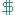

this includes eps and lps, but not singles
mostly bandcamp and youtube links, but i replace the links
every so often.
if something doesn't match, please let me know!
key:
all time fav
owned on CD
owned on vinyl
underrated artist/album

free on bandcamp| Name | Artist | Year | Details |
|---|---|---|---|
| AZALEA | Airospace | 2021 | |
| American Football | American Football | 1999 | |
| American Football (LP4) | American Football | 2026 | |
| Everybody Else Is Doing It, So Why Can't We? | The Cranberries | 1993 | |
| No Need To Argue | The Cranberries | 1994 | |
| White Pony | Deftones | 2000 | |
| DOA | ericdoa | 2024 | |
| why suffer for us? | ericdoa | 2024 | |
| deception falls | exociety | 2022 | |
| SHIFT! | exociety | 2023 | |
| Djesse Vol. 1 | Jacob Collier | 2018 | |
| The Light For Days | Jacob Collier | 2025 | |
| Bitter Tonuges | James Marriott | 2022 | |
| Don't Tell The Dog | James Marriott | 2025 | |
| Census Designated | Jane Remover | 2023 | |
| Revengeseekerz | Jane Remover | 2025 | |
| ♡ | Jane Remover | 2025 | |
| FULLMETAL KAIJU | Kill Bill: The Rapper | 2023 | |
| NEW MOON | Kill Bill: The Rapper | 2019 | |
| Ramona | Kill Bill: The Rapper | 2014 | |
| Solar Flare | Kill Bill: The Rapper | 2019 | |
| For Lovers | Lamp | 2004 | |
| Lamp Genso | Lamp | 2008 | |
| fionafionafiona | look at fiona. | 2026 | |
| look at fiona. | look at fiona. | 2025 | |
| Brasillian Skies | Masayoshi Takanaka | 1978 | |
| Seychelles | Masayoshi Takanaka | 1976 | |
| Chip Chrome & The Mono-Tones | The Neighborhood | 2020 | |
| Hard To Imagine The Neighborhood Ever Changing | The Neighborhood | 2018 | |
| I Love My Computer | Ninajirachi | 2025 | |
| Somewhere City | Origami Angel | 2019 | |
| Do You Wonder Like I Do | Peach Palette | 2019 | |
| In Rainbows | Radiohead | 2007 | |
| OK Computer | Radiohead | 1997 | |
| Beneath The Toxic Jungle | Rav | 2015 | |
| B-Sides & Rarities Vol. 3 | Rav | 2015 | |
| EMERGENCE DELIRIUM | Rav | 2026 | |
| I'M ONTO ME | Rav | 2020 | |
| SCHOOL OF ERROR | Rav | 2021 | |
| SKIN | Rav | 2020 | |
| Phenomenal | Scuare | 2021 | |
| Participation Trophy | Second Place | 2026 | |
| neoluminesence | sonolumin | 2024 | |
| ultraluminesence | sonolumin | 2026 | |
| Reading, Writing, and Arithmetic | The Sundays | 1990 | |
| Flood | They Might Be Giants | 1990 | |
| Grapes Upon The Vine | TV Girl | 2023 | |
| Summer's Over | TV Girl | 2021 | |
| Who Really Cares | TV Girl | 2016 | |
| TAROT | Yours Sincerely | 2025 | |
| Yours Sincerely, Yours Sincerely | Yours Sincerely | 2026 | |
| Existence is Existential | ...&more... | 2016 | |
| I Saw The TV Glow | Original Soundtrack | 2024 | |
| Scott Pilgrim vs. The World | Original Soundtrack | 2021 | |
| Princess Mononoke | Original Soundtrack | 1997 | |
| Stray | Original Soundtrack | 2022 | |
| the first glass beach album | glass beach | 2024 | |
| plastic death | glass beach | 2024 | |
| .temp | Graham Kartna | 2018 | |
| An Obsession With Kit | Graham Kartna | 2013 | |
| Rhetoric On Sublime | Graham Kartna | 2015 | |
| One Wayne G | Mac DeMarco | 2023 | |
| This Old Dog | Mac DeMarco | 2017 | |
| MM...Food | MF DOOM | 2004 | |
| Monarch of Monsters | Vylet Pony | 2024 | |